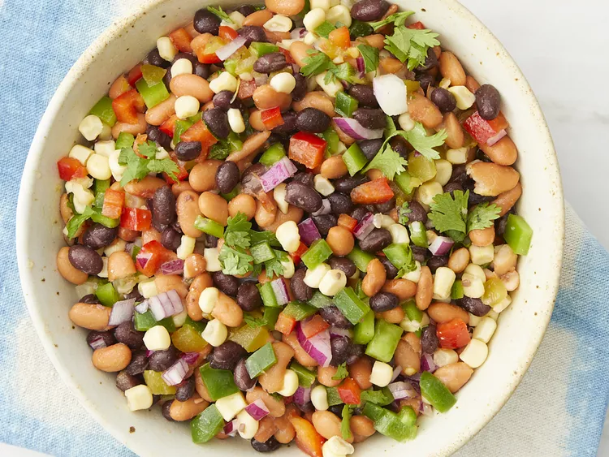

Cowboy Caviar

Description
This cowboy caviar recipe is a yummy Texas salad made with black beans and pinto beans instead of black-eyed peas. Serve with scoop-style tortilla chips as a great party appetizer.
Ingredients
- 2 (15 ounce) cans black beans, rinsed and drained
- 2 (15 ounce) cans pinto beans, rinsed and drained
- 2 (15 ounce) cans white corn, rinsed and drained
- 1 (4 ounce) can chopped green chiles, undrained
- 1 red bell pepper - cored, seeded and finely chopped
- 1 green bell pepper - cored, seeded and finely chopped
- 1 small red onion, finely chopped
- 1 jalapeno chile pepper, seeded and finely chopped (Optional)
- 1 bunch cilantro leaves, finely chopped
- 1/2 cup rice vinegar
- 1/2 cup olive oil
- 1/3 cup white sugar
- 1/2 teaspoon garlic powder
Steps
- Gather all ingredients.
- Mix together black beans, pinto beans, white corn, green chiles, red and green bell peppers, red onion, jalapeño pepper, and cilantro in a large bowl.
- Combine rice vinegar, olive oil, sugar, and garlic powder in a pan. Bring to a boil, then remove from heat. Let cool for at least 10 minutes.
- Pour dressing over bean mixture; toss to coat.
- Recipe and image from ALLRECIPES https://www.allrecipes.com/recipe/152270/best-ever-texas-caviar/